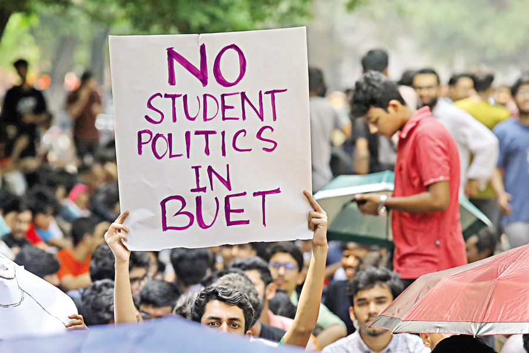

BCL announces programmes for resumption of student politics at Buet

A day after the High Court passed an order allowing student politics on Buet campus, Chhatra League has announced fresh programmes for "systematic resumption" of student politics at the institution.
Addressing a press conference at Dhaka University's Madhur Canteen today, BCL President Saddam Hossain said they will hold a sit-in at Shaheed Minar on the campus of Bangladesh University of Engineering and Technology (Buet) demanding reinstatement of the hall seat of Buet student and Chhatra League leader Imtiaz Hossain Rahim Rabbi.
The other programmes include seeking opinions and holding discussions with Buet students to determine an action plan for establishing "modern, smart and policy-based systematic student politics" on the campus, organising seminars and cultural festivals to liberate Buet from "communal-radical-militant groups", and negotiating with the administration regarding the demand for student union elections at the institution.
Saddam did not specify the date when they will initiate these programmes.
The High Court yesterday said there is no bar to do student politics on Buet campus.
Student politics was banned on Buet campus after the murder of second-year student Abrar Fahad by some BCL men at the university's Sher-e-Bangla Hall on October 7, 2019.
|